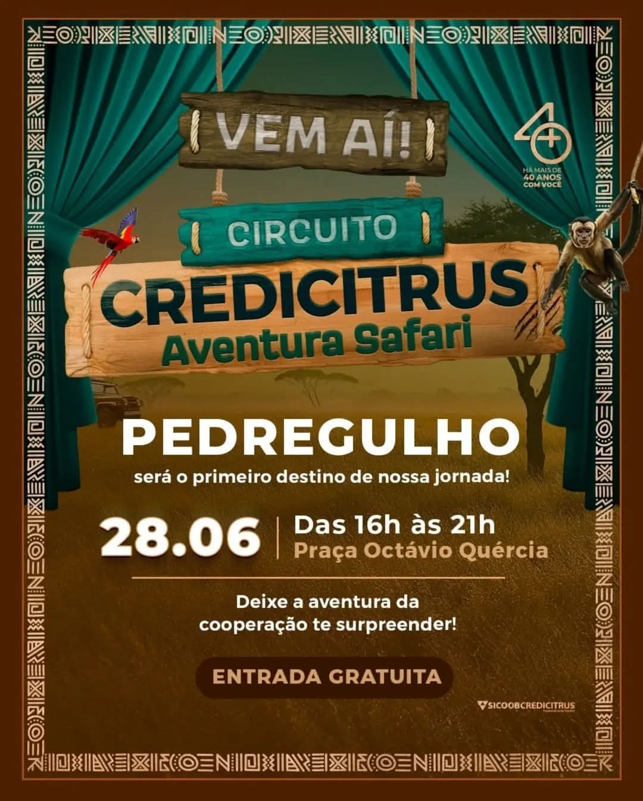
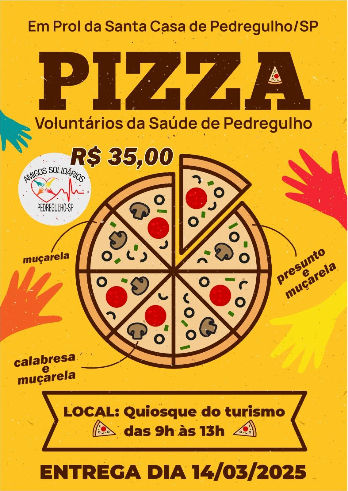

Acolhendo com cuidado Promovendo Bem-estar
Somos o Centro Voluntários da Saúde, ao lado dos pacientes da Santa Casa de Pedregulho

Por que participar?
🌟 Impacto real
Suas ações contribuem diretamente para o bem-estar de pacientes.
❤️ Comunidade unida
Você faz parte de um grupo solidário que promove encontros e apoio mútuo.
📈 Experiência enriquecedora
Ganha aprendizado, reconhecimento e crescimento pessoal.
Próximos Eventos


O que nossos voluntários dizem
"Ser voluntária mudou minha vida. A ONG é organizada e acolhedora!"
– Ana P."Saber que estou ajudando alguém todo mês é gratificante. Recomendo demais!"
– Carlos M."A união do grupo e a energia nos eventos é contagiante. Vale a pena participar."
– Lúcia R.